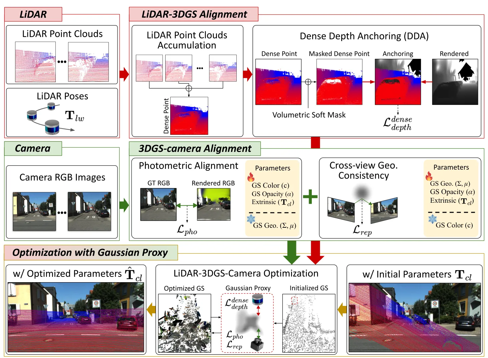

用于 LiDAR-相机外参标定的几何保持 3D Gaussian SplattingGeometry-Preserving in 3D Gaussian Splatting for LiDAR-Camera Extrinsic Calibration
与 LVI/LIO/VIO 系统中的外参标定和多模态融合前处理直接相关；3DGS 代理几何保持的思想也适用于可微重建和 SLAM 地图优化。
一句话工作总结
该方法把 3DGS 用作 LiDAR-camera targetless calibration 的可微代理，同时用多视角 LiDAR 深度监督和 photometric gradient blocking 保持真实几何。
摘要
准确 LiDAR-camera calibration 是鲁棒多模态感知的基础。Targetless 方法避免了人工靶标，但受限于跨模态判别特征稀缺。近期方法通过在可微模型中重建场景，使外参优化可由密集光度监督驱动；其中 3D Gaussian Splatting 常被用作连接 LiDAR 与相机的几何代理。但 3DGS 原本为新视角合成设计，已有方法倾向优先优化渲染质量，导致代理几何偏离真实 LiDAR 结构。本文提出一个保持 Gaussian proxy metric geometry 的框架：聚合多视角 LiDAR 观测进行 dense depth supervision，并阻断 photometric gradients 更新 Gaussian spatial parameters。作者在公开驾驶数据集上验证该方法，在标定精度上持续优于现有 targetless 方法。
Accurate LiDAR-camera calibration is essential for robust multi-modal perception. Targetless approaches avoid manual setup but remain limited by the scarcity of discriminative cross-modal features. Recent methods address this by reconstructing the scene within a differentiable model, enabling extrinsic optimization through dense photometric supervision. Among these, 3D Gaussian Splatting (3DGS) has been widely adopted as a geometric proxy that bridges LiDAR and camera within a single differentiable framework. However, since 3DGS was originally designed for novel view synthesis, existing methods tend to prioritize rendering quality, causing the proxy geometry to drift from the true LiDAR structure. We propose a framework that preserves the metric geometry of the Gaussian proxy by aggregating multi-view LiDAR observations for dense depth supervision and blocking photometric gradients from updating the Gaussian spatial parameters. We validate our method on public driving datasets, where it consistently outperforms existing targetless methods in calibration accuracy.
中文解读摘录
- 链接：abs / PDF；作者：Kyoleen Kwak, Daeho Kim, Jeong Woon Lee, Hyoseok Hwang；类别：cs.CV；备注：ECCV 2026；采集 score=10。
- 核心思路：针对 targetless LiDAR-camera calibration 中 3DGS 代理几何容易被 photometric objective 拉偏的问题，提出保持 Gaussian proxy metric geometry 的标定框架。
- 方法要点：聚合多视角 LiDAR 观测提供 dense depth supervision，并阻断 photometric gradients 对 Gaussian spatial parameters 的更新，使 3DGS 作为可微跨模态桥梁时不牺牲真实 LiDAR 几何。
- 关注点：这篇对自动驾驶/机器人多模态标定很直接。建议重点看外参优化变量、深度监督权重、photometric gradient blocking 的实现细节，以及 public driving datasets 上相对其他 targetless 方法的误差定义。
图表/页面预览

{kind=link}
